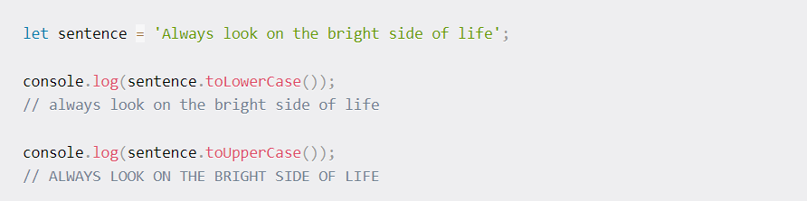
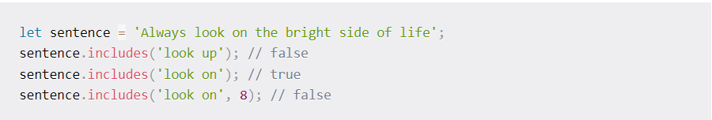
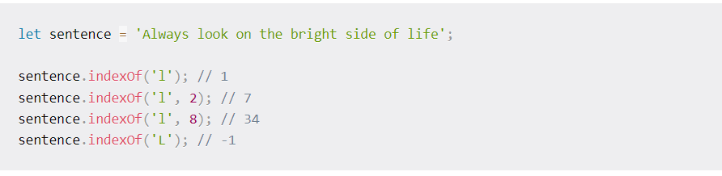
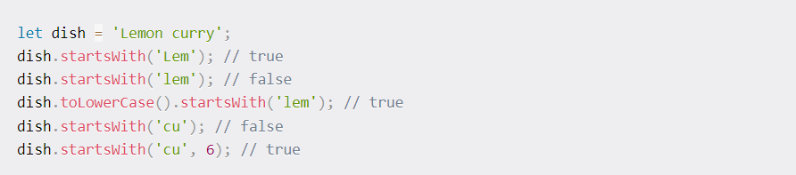

Javascript Strings Methods
A string is a sequence of characters intended to represent text. Strings can contain any kind of character, like letters, numbers, or special characters.
They are a very useful data type and you will be probably working with them frequently. So it's important to know how to manipulate them efficiently
The Basics of Strings in JavaScript
A string is a data type representing a sequence of characters that may consist of letters, numbers, symbols, words, or sentences. Strings are used to represent text. So, basically, anything that is a Unicode character.
you can create strings by wrapping the text inside single quotes ('), double quotes ("), or backticks (`).

Strings created in this way, as in the example above, are treated equally. You can easily compare them to prove it:

Strings created using backticks are also known as template literals and possess special features which we will discuss in a while.
A string created using single quotes, double quotes, or backticks is generated as a primitive value, similar to numbers and boolean values. Primitive data are immutable, which means they cannot be changed. Also, they do not have any methods or properties.
* Here is another way to create strings in JavaScript, which is via the String() constructor. The String() constructor generates a string as an object (when called with new). If called as a function (str2 in the example below), the value is coerced to a primitive string.

The typeof operator returns a string indicating the data type of the operand. This time, although str1 and str2 might seem equal, their comparison returns false, since they are completely different values. Note: From now on I will discuss exclusively primitive strings.
Basic String Manipulation in JavaScript String indexing
You can access each character inside a string through its numeric index – starting from zero – using bracket notation:

Common String Methods in JavaScript
As we said previously, primitive data does not have methods and properties. Hey, what about the length property we used before? And the charAt() method? And what about this section?! Primitive data does not have methods or properties, indeed. But when you call a method on a string, or access a property, JavaScript generates a wrapper object under the hood. In the end, methods and properties perform their job on this wrapper object. After the use, the wrapper object is disposed. So, it turns out we do have something to discuss in this section. Here are some of the most common string methods in JavaScript with examples.
The concat() method The effect of the concat() method is very similar to using the + and += operators. It concatenates one or more strings passed as arguments to the string on which the method is called, returning the concatenated string. Let's rewrite the example from the concatenation section:

The toLowerCase() & toUpperCase() methods
Sometimes, you might need to manipulate the letter case of specific strings to compare them properly, store inputs with a certain uniformity, or for other reasons.
As their names may suggest, toLowerCase() and toUpperCase() convert a string to lowercase and uppercase letters, respectively. These methods don't change the original string.
The includes() method
The includes() method checks if a specified string, passed as an argument, is present inside another string. The search is case-sensitive and the return value is a boolean.
Also, you can specify a second argument stating the index at which to start searching for the specified string.
The indexOf() methods
The indexOf() method searches for a substring and returns the first occurrence of the substring inside the calling string. It takes an optional parameter, indicating a specific index to start searching. For example:
indexOf() returns the index of the first occurrence of the substring. If the substring is not found, it returns -1. Keep in mind that the search is case-sensitive. That's why sentence.indexOf('L') in the example above returns -1.
The startsWith() & endsWith() methods
The startsWith() method checks if a string begins with a specific sequence of characters and returns a boolean value. The search is case-sensitive.
The method takes an optional argument indicating the position in which to start searching for the specified string.
Similarly, the endsWith() method checks if a string ends with a specific sequence of characters, returning a boolean value. Also in this case the search is case-sensitive.
The optional argument indicates the expected end position of the specified substring (the index of the expected final character + 1).

Wrapping up
A string is a sequence of characters that represents text. In JavaScript, strings are primitive data. You can create them by wrapping the text inside single quotes, double quotes, or backticks.
Template literals enable you to write cleaner code thanks to string interpolation, and when you need multi-line strings.
Strings are everywhere, so you will need to know how to manipulate them efficiently. In this tutorial, you have learned about the most common string methods you will use to work with strings. But there are many more for you to discover!